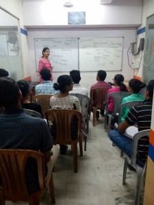

|  | Infotech Soft-Net Computer Education is one of the leading study centers in Delhi in the field of IT education . It imparts high-end training in software and networking which includes traditional as well as international certification programs to cater manpower in the field of Information technology. It also provides soft skill based training to improve the communication skill of its students and enhance their employability. | Head of the organization has got experience of more than a decade in IT training Industry and possesses various international certifications . The company is committed to work in challenging environment and prepare IT professionals, equipped with state of the art technologies so that they could be part of digital India mission and contribute in the development of nation, apart from getting good jobs in IT industry across the globe. | To set unparalleled standards of career-oriented IT education and molding high quality man power pool for all levels of India’s fastest growing industry |
|---|